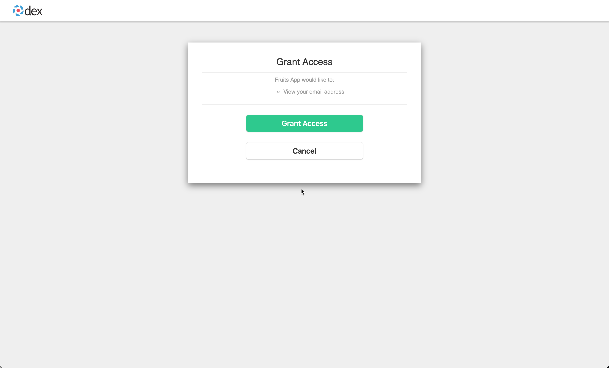
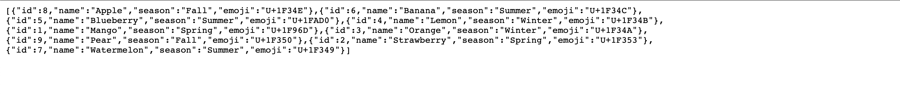

Authentication
At the end of this chapter you would have known how to:
- Deploy dexidp
- Configure authentication to Fruits API
Pre-requisties¶
We will be integrating GitHub via dexidp. For us to integrate dex with GithHub oAuth you need to have oAuth app registered and have the follwing credentials handy,
- GitHub oAuth ClientId
- GitHub oAuth CientSecret
- GitHub Organisation to use
Ensure Enviroment¶
We will use the following variables as part of this module,
export GH_OAUTH_CLIENT_ID=<your github oauth client id>
export GH_OAUTH_CLIENT_SECRET=<your github oauth client secret>
export GH_OAUTH_ORG=<the github org to use>
Prepare Dex Deployment¶
Create Namespace¶
kubectl apply -f $TUTORIAL_HOME/cluster/dex/namespace.yaml
Create Github Secret Env file¶
TODO Check Copy the template to env file,
cp $TUTORIAL_HOME/cluster/dex/github.env.secret.template $TUTORIAL_HOME/cluster/dex/github.env.secret
Update the $TUTORIAL_HOME/cluster/dex/github.env.secret values to map to your environment.
Copy Trusted CA certificates¶
envsubst < $TUTORIAL_HOME/cluster/gloo/trusted-ca.yaml | kubectl apply -n dex -f -
Dex SSL Certificates¶
To create the Dex SSL certificate, we need to know the dex service LoadBalancer IP. To get the LB IP let us create the dex service,
kubectl apply -n dex -f $TUTORIAL_HOME/cluster/dex/service.yaml
Get the dex LoadBalancer IP,
export DEX_SERVER_IP=$(kubectl get svc -n dex dex -ojson | jq -r '.status.loadBalancer.ingress[0].ip')
Create Dex CSR¶
Let us create the CSR and keys,
step certificate create gloo-demos-dex --csr \
--san "${DEX_SERVER_IP}.nip.io" \
--san "*-${DEX_SERVER_IP}.nip.io" \
--san "*.${DEX_SERVER_IP}.nip.io" \
--san "${DEX_SERVER_IP}" \
--password-file $TUTORIAL_HOME/certs/password-file \
$TUTORIAL_HOME/certs/gloo-demos-dex.csr $TUTORIAL_HOME/certs/gloo-demos-dex-key
If all goes well you should have the gloo-demos-dex.csr and gloo-demos-dex-key files in the $TUTORIAL_HOME/certs folder.
Create Certificate Request¶
Having created the CSR we are good to create the cert-manager’s CertificateRequest,
As first step let us base64 encode the gloo-demos CSR,
export GLOO_DEMOS_DEX_CSR=$(cat $TUTORIAL_HOME/certs/gloo-demos-dex.csr | step base64 | tr -d '\n' )
Create the CertificateRequest,
envsubst< $TUTORIAL_HOME/cluster/dex/certificate-request.yaml | kubectl apply -f -
Check the status of the CertificateRequest,
kubectl get certificaterequests.cert-manager.io -n step-certificates-system ${DEX_SERVER_IP}.nip.io -o json | jq '.status.conditions[]'
If all went well you should see an output like,
{
"lastTransitionTime": "2021-08-27T16:15:14Z",
"message": "Certificate request has been approved by cert-manager.io",
"reason": "cert-manager.io",
"status": "True",
"type": "Approved"
}
{
"lastTransitionTime": "2021-08-27T16:15:14Z",
"message": "Certificate issued",
"reason": "Issued",
"status": "True",
"type": "Ready"
}
Wait for the certificate to be updated in the request, you can check the same via,
CA Certificate can be retrieved by,
kubectl get certificaterequests.cert-manager.io -n step-certificates-system ${DEX_SERVER_IP}.nip.io -o json | jq -r '.status.ca' | step base64 -d >$TUTORIAL_HOME/certs/gloo-demos-dex-ca.crt
TLS Certificate can be retrieved by,
kubectl get certificaterequests.cert-manager.io -n step-certificates-system ${DEX_SERVER_IP}.nip.io -o json | jq -r '.status.certificate' | step base64 -d > $TUTORIAL_HOME/certs/gloo-demos-dex.crt
Verify Certificates¶
if step certificate verify $TUTORIAL_HOME/certs/gloo-demos-dex.crt --roots $TUTORIAL_HOME/certs/root_ca.crt --host=$DEX_SERVER_IP.nip.io ;
then
echo 'Verification succeeded!'
else
echo 'Verification failed!'
fi
With Verification succeeded!, we are now all set to encrypt our gateway traffic.
Create SSL Secret¶
To be able to encrypt the traffic via Gloo Gateway, we need to configure the TLS certicates. The TLS certficate is configured using Kubernetes Secret.
Decrypt the private key that we used to create the Certificate Signing Request,
step certificate key $TUTORIAL_HOME/certs/gloo-demos-dex-key --out=$TUTORIAL_HOME/certs/gloo-demos-dex.key
Note
The command out put says its public key, but its actually decrypted private key
kubectl create secret generic dex-tls -n dex \
--from-file=tls.crt=$TUTORIAL_HOME/certs/gloo-demos-dex.crt \
--from-file=tls.key=$TUTORIAL_HOME/certs/gloo-demos-dex.key \
--from-file=ca.crt=$TUTORIAL_HOME/certs/gloo-demos-dex-ca.crt
Deploy Dex¶
kustomize build $TUTORIAL_HOME/cluster/dex \
| envsubst | kubectl apply -f -
Wait for the dex deployment to be up and running
kubectl rollout status -n dex deploy/dex --timeout=60s
Create Gloo oAuth Secret¶
We have configured the fruits-app static client to identify itself with dex using a secret, the following snippet from dex config.yaml shows the base64 encoded secret that was configured,
staticClients:
- id: fruits-app
redirectURIs:
- 'https://$GLOO_GATEWAY_PROXY_IP/callback'
name: 'Fruits App'
# value is fruits-app-secret
secret: "nJ1aXRzLWFwcC1zZWNyZXQ="
The value of the client-secret is same as the secret value in the dex config.yaml.
Let us create the Gloo oAuth secret to be used,
glooctl create secret oauth \
--client-secret 'fruits-app-secret' fruits-app-oauth
Gloo oAuth Config¶
envsubst < $TUTORIAL_HOME/apps/microservice/fruits-api/gloo/auth-config.yaml \
| kubectl apply -f -
Update Virtual Service¶
Now let us update the virtual service to use the oAuth config,
envsubst < $TUTORIAL_HOME/apps/microservice/fruits-api/gloo/virtual-service-oauth.yaml \
| kubectl apply -f -
Accessing Application¶
When you try to open the URL $GLOO_PROXY_HTTPS_URL/api/fruits in the web browser you will be thrown an login screen as shown:

Enter the email address as admin@example.com with passsword as password.
With successful login we will be asked permissions for Grants,

With us approving the grants we will be shown the list of fruits,
